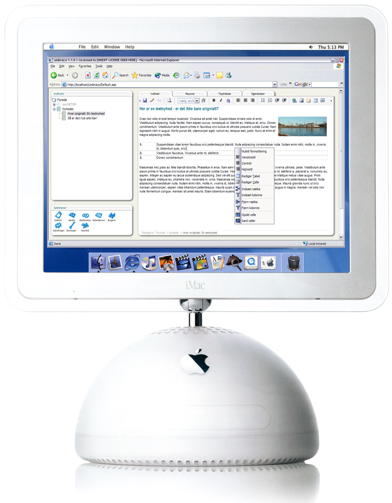
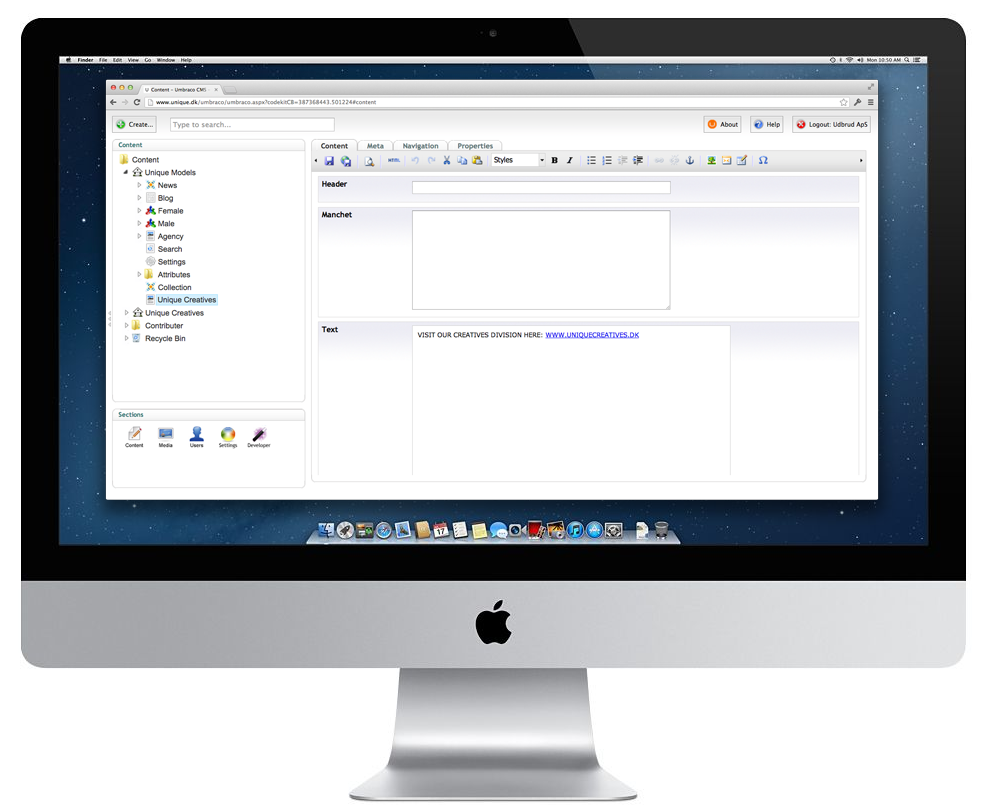

Project Belle
What is Belle?
Development of a new user experience for Umbraco 7
With 100% focus on content editors and their workflows
Goals
Effective and intuitive content editing tools for editors
Take new workflows and devices into account
Replace the outdated desktop metaphors with a modern web application
Timeline
Fall 2011
Collaboration with Mark Boulton design.
Fall 2012
First sketches and drafts, UK Festival prototype.
Winter 2013
Iteration on common workflows and views.
Spring 2013
New prototype built from scratch
Design
Umbraco 1
Umbraco 4.9
Tech
Overhaul
Not just a skin - completely built from scratch
iframes
webforms
hacks
We ♥ frontenders
Js, Css, Html5
Twitter Bootstrap
AngularJS
require.js
Bootstrap
Grid and conventions
CSS baseline
Html components
AngularJS
Javascript framework by google
MVC Pattern
Project structure and conventions
2-way Data binding
Require.js
Dependency loading
css + js
Performance, Performance, Performance

Everything else is "experimental"
Backwards compatibility
Support for legacy datatyper
Switch when you are ready
6.5 is technically identical with 7.0